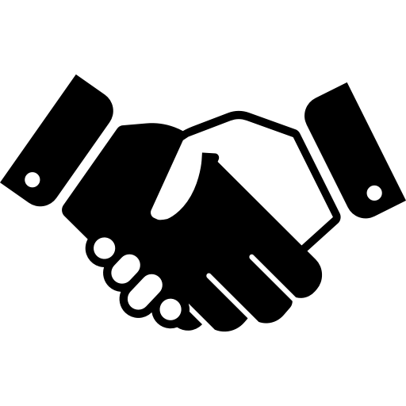
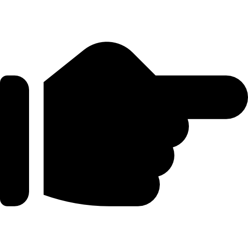

- LE PORTEUR -
Une personne
Porteur du projet monepitaphe.com, je m'appelle Boris, réside dans le 87 (Haute-vienne), et c'est d'une façon assez naturelle, un peu inconsciente, mais profondément convaincue que je m'investis dans cette démarche.
De tout temps attiré par la technique et la technologie, c'est ce qui m'anime au quotidien, que ce soit pour l'événementiel ou le numérique.
Un parcours
Lorsque j'ai commencé le développement web il y a quelques années, c'était avant tout pour essayer de mettre en place un projet qui rejoignait ces deux domaines.
Le projet n'était finalement pas viable, mais m'a permis de faire un premier pas dans l'entrepreneuriat.
J'ai alors continué à m'intéresser au sujet et à me perfectionner en langage web (Wordpress, HTML, CSS et PHP, pour les initiés).
Un concept
Je ne savais pas où cela me mènerait, lorsque l'idée de monepitaphe.com m'est "tombée dessus"...
En effet, l'imprévu, les aléas, et la douleur du deuil m'ont inspiré ce projet.
L'évidence de son utilité, de sa modernité et son avenir certaine m'incite à le défendre.
Atmosweb est une jeune entreprise créée principalement pour porter le projet "monepitaphe.com", et également pour me permettre d'accepter des contrats dans la création de sites internet.
- LE PROJET -
Un fondement
 Suite au décès de personnes qui m'étaient chères, une fois le deuil "accepté", j'ai eu malgré tout envie, de les revoirs, de les entendre, ou au moins de lire des choses les concernant.
J'ai alors fait des recherches google, mais à part un avis décès sans grand intérêt, je n'ai rien trouvé...
En effet, ces personnes n'était pas branchées numérique/informatique, pas de résidus de réseaux sociaux, de reportages vidéo ou article dans un journal, RIEN.
Lorsque j'ai voulu faire des recherches sur mon historique familial, j'ai passé énormément de temps à trouver, déja où chercher, puis à consulter les registres d'état civil en ligne.
Lorsque le numéro de téléphone de mon père a été réattribué, je ne pouvais plus entendre sa voix.
Il n'était pas très expressif, et moi pas très curieux.
Peut-être qu'avec l'aide d'un outil comme celui que je propose, nous aurions davantage échangé sur son vécu, rigolé en l'enregistrant, en cherchant des photos; nous aurions pu partager et dédramatiser sa mort en en parlant de façon légère et utile.
Un constat
Il y a un manque évident dans la conservation de mémoire en ligne, ce qui, à l'ère du numérique, parait inconcevable.
De plus, entre les incinérations et les enterrements loin de l'entourage, un cimetière numérique permettrait de conserver dans sa poche, une trace de ceux qui nous manquent.
Le secteur funéraire, même si très "traditionnel", est aussi amené à évoluer avec son temps. Il y a d'ailleurs de plus en plus d'alternatives qui émergent; des coopératives, des cimetières naturels...
Un combat
Parce qu'il n'est pas normal que lorsqu'on est plus, nos descendants ne puissent pas savoir qui nous avons été.
Parce que les avantages de monepitaphe.com sont multiples :
- Pas de problème de place ou de distance
- Mémoire et hommages toujours et partout accessible
- Témoignage, souvenir complet et authentique
- Histoires de vie consultable par tout le monde, y compris les générations futures.
- Centralisation des documents relatifs à la généalogie.
- LES BESOINS -

Une visibilité
Ayant déjà créé la plateforme numérique, je prospecte activement pour la faire connaître.
Afin d'offrir une meilleure garantie aux utilisateurs, monepitaphe.com doit s'inscrire dans une démarche collective.
En recherche de partenariats, monepitaphe.com offrirait un réel avantage pour les prestataires funéraire, accompagnants au deuil et à la maladie, autant que pour les familles.
Une évolution
La plateforme est opérationnelle, fonctionnelle et déjà lancée.
J'y ai passé énormément de temps, a mettre en place les solutions techniques, les tester, les re-tester, et suis satisfait du résultat.
Au fur et à mesure de son exploitation, il faudra bien sûr l'améliorer, la rendre encore plus attrayante, ajouter d'autres fonctionnalités, les idées ne manquent pas.
Un soutien
Pour ce faire, il y aura besoin de :
- Employer une équipe (développeur web, gestionnaire de partenariats/relation client, design/community manager... )
- Acheter du matériel (informatique, serveur)
- Louer un bureau
Tout cela a un prix, c'est pourquoi la participation de financeurs, investisseurs et autres mécènes sera bienvenue.
La porté du projet n'aura peut-être pas une répercussion financière conséquente, mais son impact moral, humain, sentimental sera indéniable.